The gripper
A two-finger gripper whose spherical membrane rollers both pull the object in and then lock it in place.
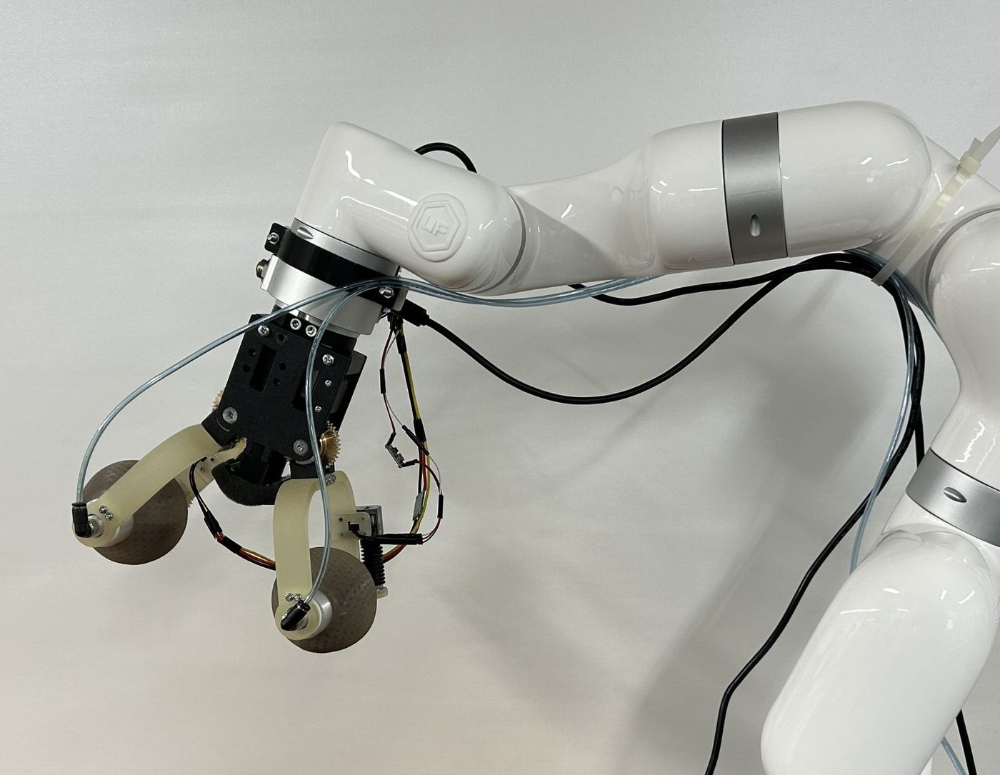
Abstract
In household manipulation, pose uncertainty often results in off-centre or partial initial contact, making reliable object acquisition difficult. Roller-based grippers can actively draw objects inward but often provide limited post-capture stability, whereas granular-jamming grippers require sufficient contact before jamming to achieve strong retention.
This paper presents a hybrid roller-jamming gripper that integrates active object intake and post-capture retention within a single gripper. The proposed gripper uses inward roller rotation to increase contact and draw the object toward the gripper centre, followed by vacuum-induced granular jamming to stiffen the rollers and stabilise the grasp. The paper also presents a simplified geometric analysis of the gripper and preliminary single-trial bench force measurements, which provide prototype-level observations rather than rated performance values.
The gripper prototype was mounted on a 7-DoF robotic arm and evaluated using eight known test objects. Controlled planar and orientation offsets were applied relative to the nominal top-down TCP pose, with each condition repeated three times. The main evaluation comprised 840 grasp trials, including 216 planar-offset trials and 624 orientation-offset trials. Overall, the gripper succeeded in 812/840 trials: 215/216 planar-offset trials and 597/624 orientation-offset trials. The ablation evaluation comprised 162 trials on three objects. The roller-only and jamming-only conditions achieved 54/81 and 24/81 successes, respectively, showing their different contributions. These results provide initial mechanism-level evidence that hybrid roller-jamming is a promising strategy for improving acquisition and retention after imperfect first contact.
Video
How it works
Intake with rollers
When the first contact is off-centre or only partial, the rollers rotate inward and pull the object toward the centre of the gripper, increasing contact area.
Retention with jamming
Once the object is captured, vacuum turns the granular fill of the rollers rigid. The rollers conform to the object and hold it in place during lift.
Specifications
| Item | Value |
|---|---|
| Overall envelope (W × L × D) | 70 × 228 × 177 mm |
| Total gripper mass | 1.31 kg |
| Spherical membrane roller diameter | ≈ 80 mm |
| Roller axial width | 73 mm |
| Finger pivot to roller centre | 115.6 mm |
| Max roller centre-to-centre distance | 285 mm |
| Finger drive transmission | Worm gear, 1:40 |
| Roller drive transmission (each roller) | Worm gear, 1:20 |
| Actuated degrees of freedom | 3 (finger closing + one per roller) |
| Vacuum during jamming | −0.082 MPa |
Results
840 grasp trials on eight known objects under controlled planar and orientation offsets, each condition repeated three times, plus a 162-trial ablation.
Overall success
| Object | Successful trials | Success rate |
|---|---|---|
| Pen | 102/105 | 97.1% |
| Marble | 105/105 | 100.0% |
| Gallon jug | 93/105 | 88.6% |
| Plastic cup | 105/105 | 100.0% |
| Paper sheet | 105/105 | 100.0% |
| T-shirt | 105/105 | 100.0% |
| Pressure gauge | 96/105 | 91.4% |
| Cable | 101/105 | 96.2% |
Experimental setup and test objects
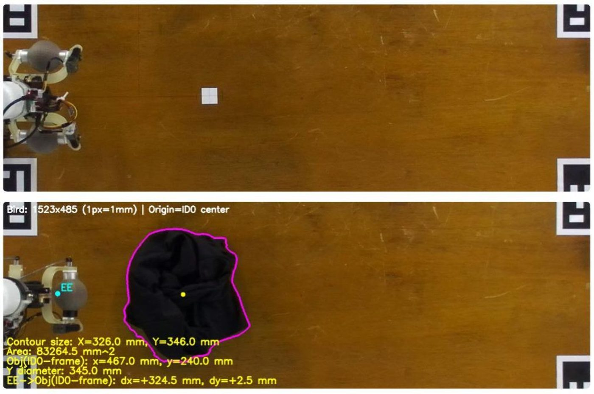
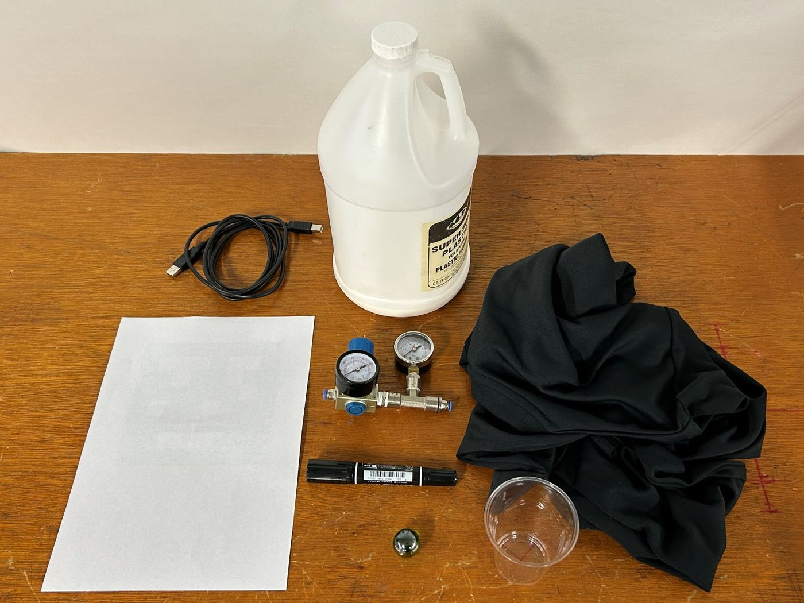
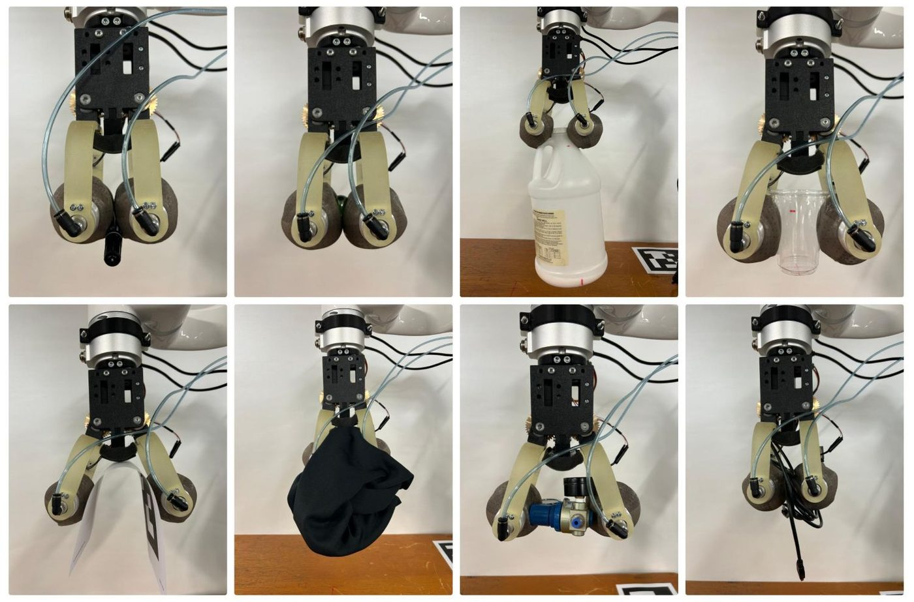
Planar offsets
215 of 216 planar-offset trials succeeded. Seven of the eight objects completed all 27 trials; the gallon jug accounted for the only failure.
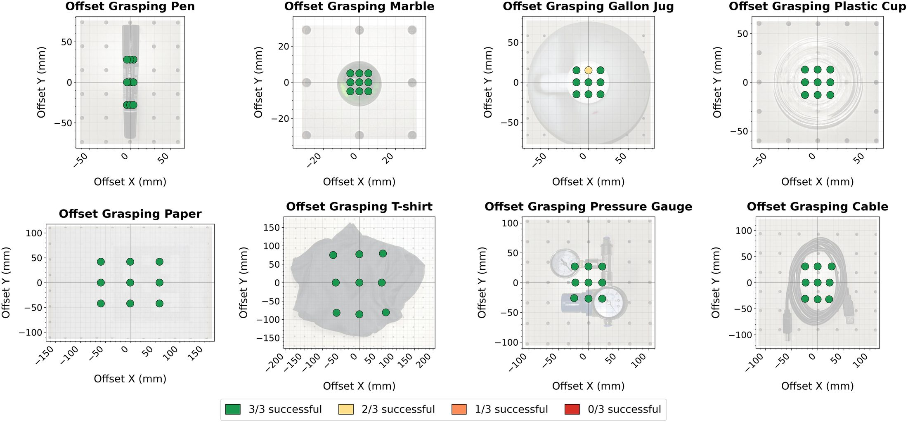
Orientation offsets
597 of 624 orientation-offset trials succeeded. The gallon jug and pressure gauge were the most challenging rigid objects.
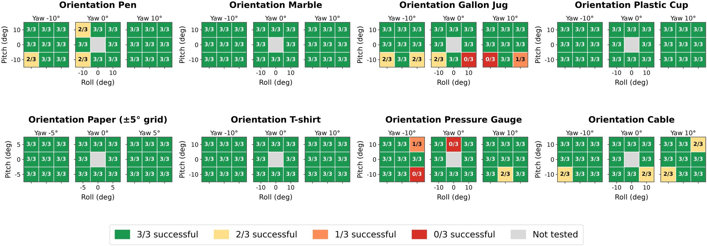
Ablation: rolling vs. jamming
Planar-offset trials on the pen, gallon jug and cable (81 trials per condition) show that rolling and jamming contribute differently.
| Condition | Successes |
|---|---|
| Hybrid (full sequence) | 80/81 |
| Roller only (jamming off) | 54/81 |
| Jamming only (roller off) | 24/81 |
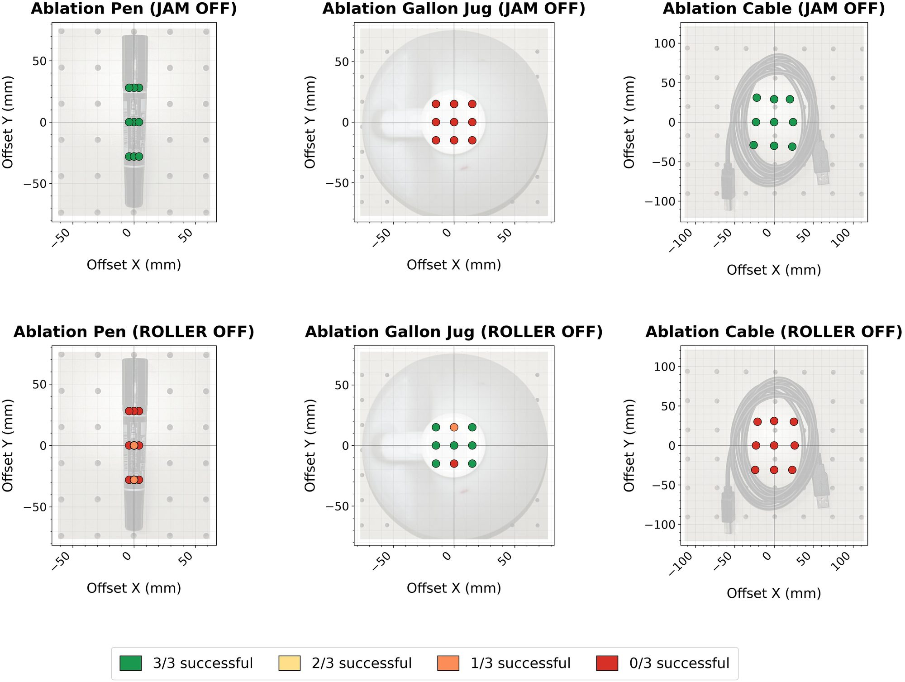
Limitations
- Each offset condition was repeated three times on eight known objects. The results describe the tested conditions and should not be generalised to unseen objects.
- All trials used a clear tabletop and a top-down approach, with no clutter, constrained approaches or external baseline gripper.
- Intake duration, grasp height and clamping settings were calibrated per object.
INTAKEandJAMrun for fixed durations, and motor current cannot confirm contact with both rollers. - The prototype is relatively bulky and heavy, and a single actuator closes both fingers, so they cannot adapt independently to one-sided contact.
- The geometric analysis is a nominal rigid-envelope reference, and the bench forces are single-trial, prototype-level measurements rather than rated values.
Build & control
Mechanics, membrane rollers, electronics, pneumatics and the grasp controller.
Mechanical design
The gripper has three actuated degrees of freedom: one shared DoF for finger opening and closing and one for each roller. A single XM430 actuator drives both fingers through a 1:40 worm-gear transmission, giving synchronous, self-locking motion; closure is stopped when the XM430 current reaches 0.296 A. Each roller is driven by its own XL320 actuator through a 1:20 worm gear, rotating inward for intake and outward for release.
Most structural parts are 3D-printed in ABS. The finger links are printed in RGD720 resin for higher dimensional accuracy. Motors, worm gears, bearings, fasteners and rotary unions are off-the-shelf, and foam pads on the palm reduce hard contact with the object.
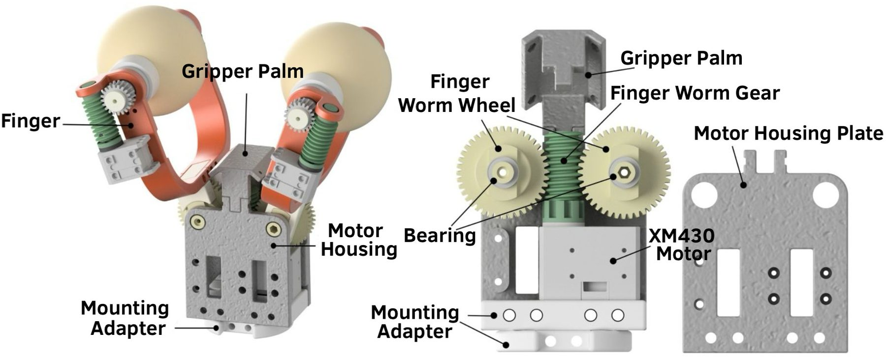
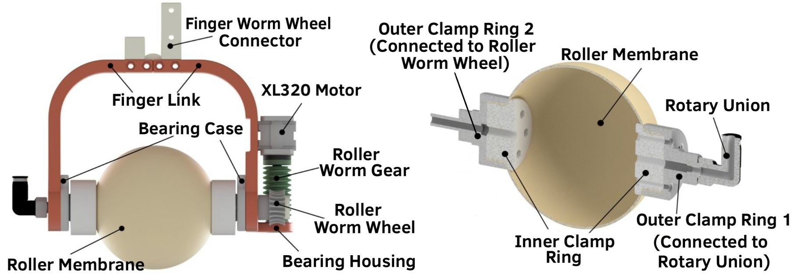
Spherical membrane rollers
Each membrane is cast as a single spherical shell from Dragon Skin 30 silicone (nominal thickness 1 mm, outer diameter about 80 mm) in a 3D-printed two-part mould with an internal core. Dimples on the outer surface (3 mm diameter, 0.6 mm high) are intended to improve membrane flexibility.
The membrane is filled mainly with ground coffee plus about 50 polypropylene balls of 3 mm and 5.5 mm diameter, which reduces clumping and preserves airflow during evacuation. ABS clamp rings seal both ends; one end drives the roller and the other connects to a rotary union, so vacuum can be applied while the roller turns. Because the membrane is clamped rather than bonded, membrane and fill can be replaced in about 10 minutes. No membrane failures were observed during about 1000 grasp trials with the same membrane set.
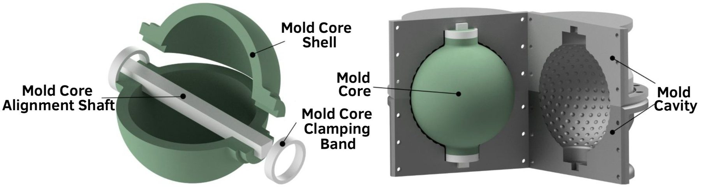
Electronics and pneumatics
A host PC coordinates the robot arm, the three Dynamixel actuators (through a U2D2 interface) and an Arduino-based valve controller. The XM430 is supplied at 12 V and the two XL320s at 7.4 V through a DC–DC converter. Vacuum comes from an external rotary-vane pump (42 L/min free-air displacement) through two independently controlled solenoid valves, relay-driven by the Arduino at 24 V. A gauge between the valves and the rotary unions measured −0.082 MPa during jamming. The pump, valves and controllers stay off-board, and the gripper is not specific to the xArm7 used in the experiments.
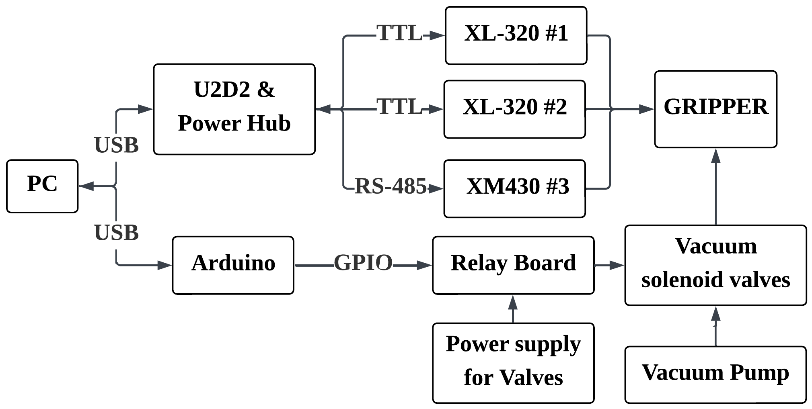
Grasp controller
A Python finite-state machine runs on the host PC at 50 Hz with five states:
- CLOSE
- Fingers close until motor current exceeds the object-specific threshold for 0.5 s, an indirect sign of initial contact.
- INTAKE
- Both rollers rotate inward for an object-specific duration, drawing the object toward the centre.
- HOLD
- Fingers increase the clamping load until motor current exceeds the HOLD threshold for 0.8 s.
- JAM
- Vacuum is applied to both rollers for a fixed 2 s; lifting and transport begin after this interval.
- RELEASE
- Vacuum lines are vented, rollers rotate outward and fingers open. Also entered after an abort or manual-release command.
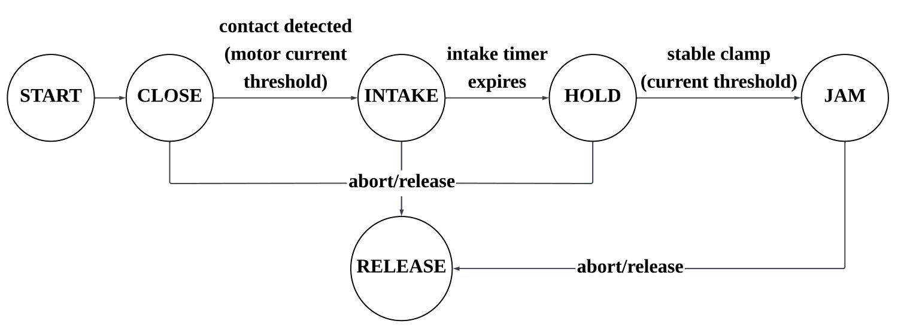
CLOSE and HOLD use motor-current and dwell conditions, whereas INTAKE and JAM use prescribed durations. Abort or manual-release commands return the system to RELEASE.Bench force tests
Each test was run once with an S-type load cell (LC-1122, 500 N) and an HX711 amplifier, so the values are single-trial, prototype-level observations. Roller traction (vacuum off) reached 8.4 N and grasp slip-out resistance 25.6 N. Clamping reached 27.7 N, at which point the 3D-printed parts failed: this is the structural limit seen in the test, not a rated clamping force.
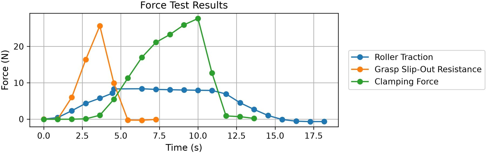
Code and 3D models
We plan to release the 3D models and control code. Links will appear here once the repository is public.
Citation
@article{ren2026hybrid,
title = {Hybrid Roller-Jamming Gripper for Object Acquisition and Retention Under Pose Uncertainty},
author = {Ren, Yijie and Gourmelen, Guillaume and Iwata, Hiroyasu},
journal = {IEEE Access},
year = {2026},
doi = {10.1109/ACCESS.2026.3738462}
}